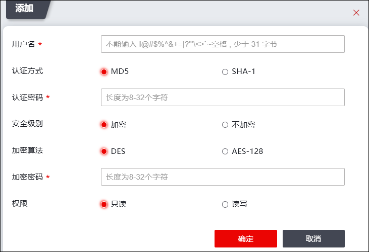

NGFW支持SNMP V1/V2/V3版本。网络管理员使用SNMP V1、SNMP V2对NGFW进行查询或配置时，只需在管理主机设置时设置“community”即可，但V1/V2版本存在很大问题：传输的认证和管理数据不经过加密，且数据的收发缺乏鉴别机制，因此这两个版本对网络的管理缺乏安全保障。
为了解决该类问题，NGFW支持使用SNMP V3版本，并引入了更高的安全级别：1）基于HMAC-MD5认证的机制，此类认证不提供加密；2）基于HMAC-MD5认证，CBC-DES加密的加密机制。网络管理员使用SNMP V3对NGFW设备进行查询或配置时，不仅可将传送的报文使用DES算法进行加密，NGFW还可以通过SNMPV3用户的密钥验证网络管理员身份的合法性，因此，SNMP V3进一步提高了对NGFW设备被SNMP管理软件管理的安全性。下面介绍如何配置SNMPV3用户。
| 步骤1 | 选择 。 |
| 步骤2 | 添加SNMPV3用户。点击“添加”，弹出窗口界面如下图所示。 |

在添加SNMPV3用户时，各项参数的具体说明如下表所示。
参数 |
说明 |
|---|---|
用户名 |
必填项，设置网络管理员通过SNMP网管软件访问NGFW时所使用的用户名。 |
认证方式 |
设置对用户进行认证使用的认证模式。可选项：MD5、SHA。 |
认证密码 |
必填项，指定管理站通过SNMPV3用户账号向NGFW进行身份认证时使用的认证密码。必须为8位字符。 说明： 1）NGFW支持的SNMP认证算法为MD5。 2）SNMP认证，可保证只有拥有设备访问权限的用户才可访问该设备。 |
安全级别 |
设置是否对SNMP认证和管理信息进行加密。可选项：加密，不加密。 说明： 1）当设置加密时，同时使用加密和认证技术，先对数据进行加密，然后进行认证技术的消息摘要计算。 2）设置不加密时，只使用认证技术。 |
加密算法 |
安全级别选择“加密”时，设置NGFW向管理员返回查询或配置结果时使用的加密模式。可选项：DES、AES。 |
加密密码 |
设置消息加密时使用的密码。密码长度为8-32位字符。 说明： SNMP加密，使管理主机与被管理设备间的数据以密文方式传输，避免数据被非法用户窃取。 |
权限 |
设置V3用户权限，必选项：只读、读写。 |
| 步骤3 | 点击【确定】按钮完成SNMPV3用户的创建。 |